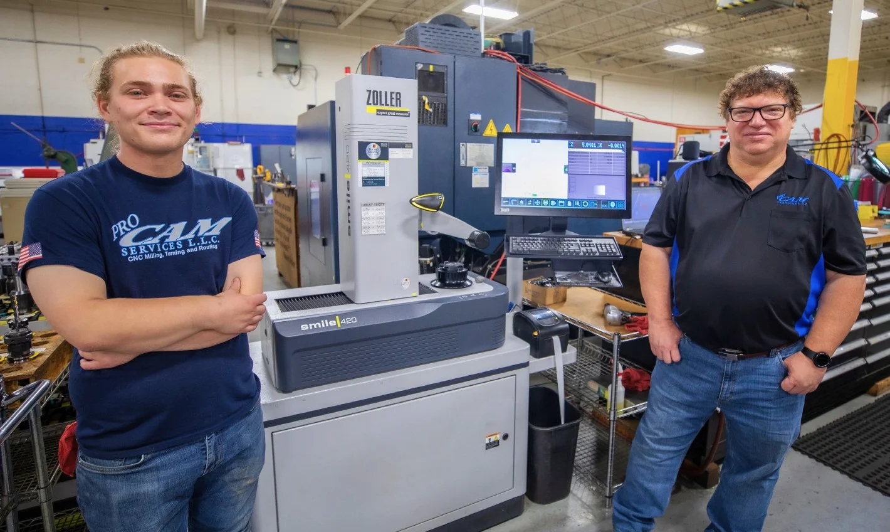
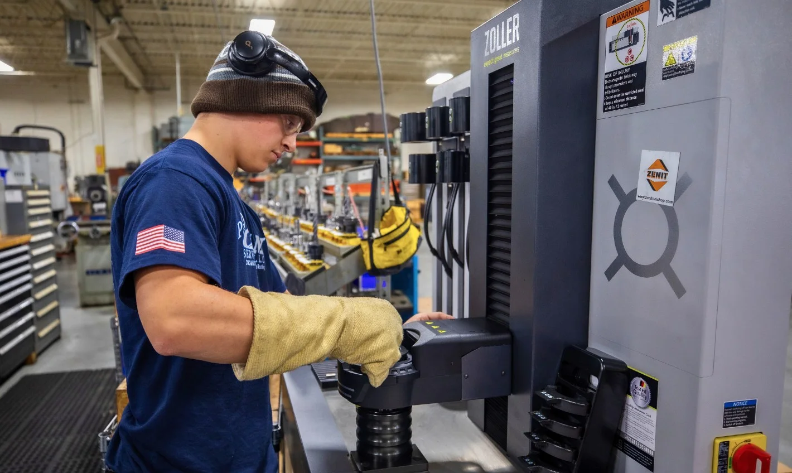
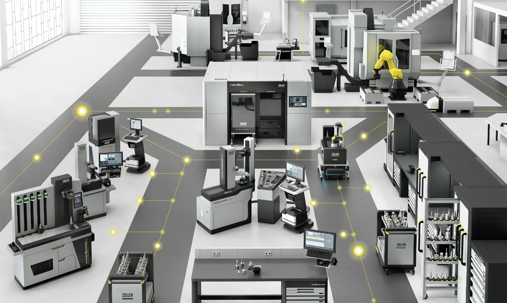
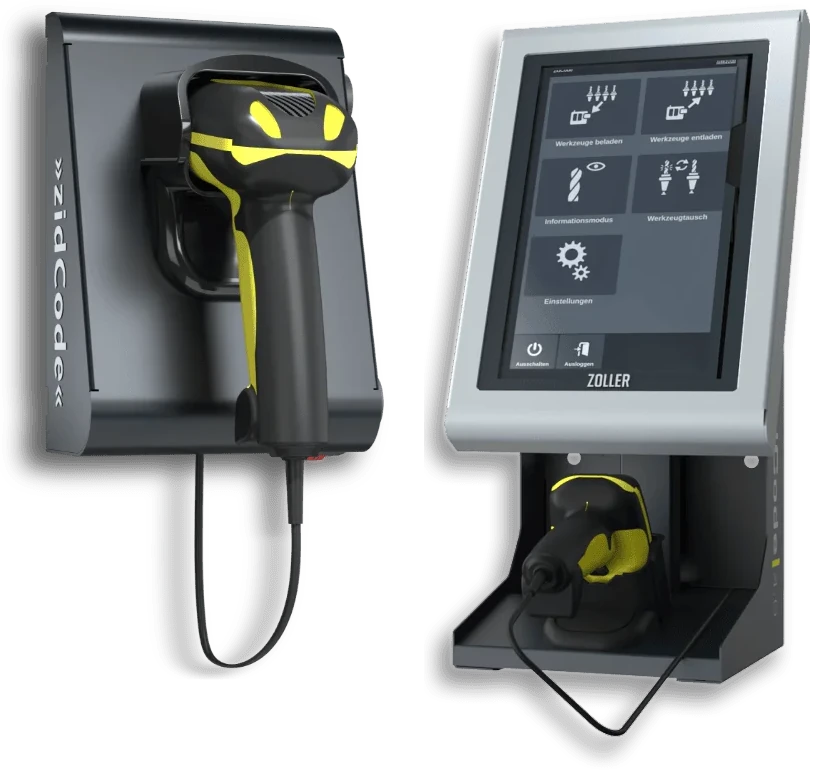
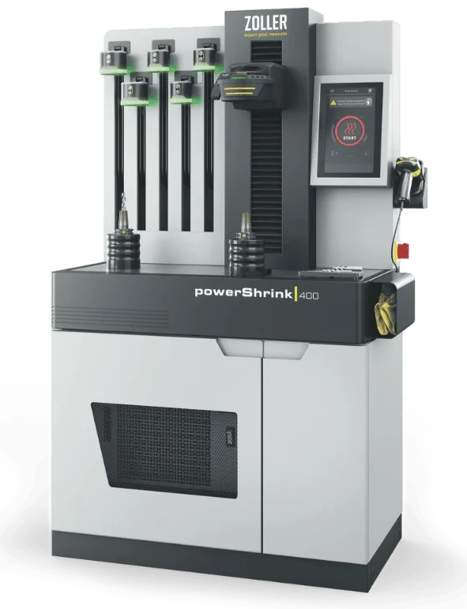

Investir dans un prérégleur d'outils, c'est rentable
Si l'on demande à un groupe de propriétaires d'ateliers d'usinage ce qu'ils souhaitent, ils répondront sans doute tous qu'ils souhaitent réduire les temps d'équipement, accélérer les changements d'outils et augmenter le temps de fonctionnement des machines.
Mais si l'on demande à ces mêmes entrepreneurs quelles technologies ils utilisent pour travailler de manière plus efficace, les réponses sont très différentes.
Alors que la pénurie persistante de main-d’œuvre qualifiée dans l’industrie manufacturière stimule l’intérêt pour les solutions permettant d’augmenter la productivité, de plus en plus de petites et moyennes entreprises reconnaissent le potentiel d’économies des bancs de préréglage d’outils. Ces systèmes de mesure externes saisissent la longueur d'outil, le diamètre et le déport des outils avant que ceux-ci ne soient montés sur la machine.
« Il n’est pas rare que nous rencontrions des propriétaires d’ateliers qui croient à tort que les appareils de préréglage ne sont pas faits pour eux », explique Dietmar Moll, directeur commercial chez ZOLLER Inc. à Ann Arbor, dans le Michigan. « Mais dès que l'appareil est installé dans leur atelier et qu'ils voient les résultats, nous entendons souvent : "Si seulement nous l'avions acheté plus tôt." »
C’est exactement ce qui est arrivé à ProCam Services LLC, une entreprise familiale de sous-traitance CNC fondée il y a près de 30 ans dans l’ouest du Michigan par Tom Bassett II. D'abord sceptique à l'égard des appareils de préréglage, ses doutes se sont rapidement dissipés après avoir acheté le ZOLLER »smile 420« il y a environ cinq ans et l'avoir intégré dans le processus de travail de son fonctionnement très sollicité.
L’appareil mesure les outils coupants avec une précision de l’ordre du micromètre – et ce, en quelques minutes. Des tests internes menés par ZOLLER montrent que la mesure à l’aide d’un appareil de préréglage est au moins 45 % plus rapide que via la commande de machine. Le réglage externe a soulagé les opérateurs de machines, qui passaient auparavant un temps précieux sur la broche au cours du palpage des outils. Désormais, un opérateur peut mesurer les outils pour la commande suivante pendant que la machine tourne encore – ProCam a ainsi gagné du temps de production en supplément.
Dès la première année suivant l’introduction du pré-réglage (2019), le chiffre d’affaires a augmenté de 300 000 dollars US, puis de 700 000 dollars US supplémentaires l’année suivante. M. Bassett attribue la majeure partie de cette augmentation d’un million de dollars à des processus plus efficaces et à une productivité accrue des machines.
« Je ne pense pas avoir jamais acheté un appareil qui ait autant transformé notre travail », déclare M. Bassett. « Il y a beaucoup de choses pour lesquelles on se dit : "Nous devrions avoir acheté ça plus tôt" – mais rien n'a eu un tel impact que le ZOLLER. »
Je ne pense pas avoir jamais acheté un appareil qui ait autant bouleversé notre travail
Fondateur de ProCam Services LLC
Les appareils de préréglage sont-ils adaptés aux fonctions de traitement de produits variés en petites quantités ?
L'opinion actuelle de Bassett diffère nettement de celle qu'il avait auparavant. Il a longtemps été convaincu que les appareils de préréglage ne convenaient pas aux opérateurs traitant de nombreuses commandes différentes et nécessitant de changer fréquemment.
Depuis sa création en 1995, ProCam est positionné comme un sous-traitant flexible qui se distingue par des délais de livraison courts et une qualité optimale. Les employés traitent chaque jour 20 à 30 commandes différentes, pour des secteurs allant de l'aéronautique et de l'aérospatiale à l'automobile en passant par l'agriculture.
L'usine de 3 500 m² dispose de huit fraiseuses (machines à 3, 4 et 5 axes, verticales et horizontales), de trois machines rotatives – dont une à six axes – ainsi que de deux centres d'usinage CNC. Cet équipement offre une flexibilité maximale pour les matériaux et les tailles de lots les plus divers.
« Certains clients appellent le matin parce que leur installation est à l'arrêt – et l'après-midi, nous livrons déjà la pièce de rechange », explique M. Bassett. « En règle générale, nous n'avons qu'environ deux semaines de retard, car nous traitons les commandes très rapidement. »
Chaque minute passée à la préparation est une minute pendant laquelle la machine ne rapporte pas d’argent. Il n’est donc pas étonnant que, selon l’enquête Top Shops Survey 2019 de de Gardner Intelligence, les fonctions les plus rentables utilisent plus souvent des appareils de préréglage. Selon cette enquête, 55 % des entreprises dont le chiffre d’affaires par employé dépasse 180 000 dollars (un indicateur de forte rentabilité) utilisent un appareil de préréglage, contre seulement 29 % des entreprises les moins rentables.
Bassett a lui-même fait le calcul : combien de temps son équipe passe-t-elle chaque jour au palpage des outils et au contrôle de la concentricité ? Résultat : 30 à 60 minutes par commande. Multiplié par le nombre de commandes par jour et par heure-machine, cela représentait une perte de temps considérable – et des coûts d'opportunité tout aussi élevés. « Au début, je me suis dit que cela ne pouvait pas être vrai », se souvient-il. « Mais ensuite, cela m'est apparu clairement : nous devons absolument nous procurer cet appareil. »

Précision et répétabilité
Aujourd'hui, le préréglage des outils avec le »smile 420« constitue la première étape de chaque commande chez ProCam. Outre un gain de temps considérable, cet appareil offre une répétabilité impossible à atteindre de manière manuelle. La broche SK-50 de haute précision, l’optique et la caméra de traitement d’image fournissent des données exactes à chaque mesure.
« Avant, nous avions de grands écarts entre les équipes », raconte M. Bassett. « L'équipe de jour mesure différemment de l'équipe de nuit – et voilà qu'il y a des problèmes de qualité ou des retouches. Avec le ZOLLER, cela n'arrive plus, car chaque mesure est identique. »
Les données de mesure sont automatiquement transmises à la commande de machine – les fautes de frappe sont exclues. M. Bassett a même développé son propre programme pour transférer les données vers plusieurs machines simultanément. « Le système est aujourd’hui tellement intégré à notre processus que nous sommes beaucoup plus flexibles qu’auparavant », dit-il. « Je ne peux même plus imaginer travailler sans lui. »
Convaincre les employés de la valeur ajoutée
Bien que les chiffres soient convaincants, M. Bassett a également dû convaincre ses opérateurs du bien-fondé du nouveau système. Jusqu’alors, chacun utilisait ses propres méthodes – avec des jauges d’épaisseur, des blocs 1-2-3 ou des bandes de papier.
« Quand ils contrôlent la concentricité, cela prend entre une et cinq minutes par outil – avec 15 outils par commande, cela fait vite 45 minutes », explique Bassett. « Avec ZOLLER, nous avons terminé en moins de cinq minutes. »
Un employé particulièrement sceptique a été chargé de faire la comparaison : il devait palper ses outils « à l’ancienne » et comparer les résultats avec ceux du préréglage. « Je lui ai dit : prouve-moi que l’appareil est situé incorrectement », se souvient Bassett en riant. « Au bout d’une semaine, il ne vérifiait plus rien manuellement. »
Aujourd’hui, toute l’équipe fait confiance au »smile 420«. « Il nous facilite tout simplement la tâche », déclare Alex Bassett, chef d’équipe et fils du fondateur de l’entreprise. « On a tellement de choses en tête – c’est donc rassurant de savoir que le ZOLLER est fiable. Cela apporte tranquillité et sécurité. »

Bien plus qu'un simple appareil de préréglage : un partenaire de choix
Outre l'appareil de préréglage, Bassett a également fait l'acquisition de porte-outils ZOLLER et, après l'IMTS 2022, de la machine de rétraction »powerShrink 600«. « Nous en sommes encore à la phase initiale, mais nous constatons d’ores et déjà des améliorations significatives en termes de temps de fonctionnement, de vitesses de coupe et d’avances », explique-t-il. « La durée de vie de nos outils a environ quadruplé. »
Alex Bassett est lui aussi enthousiaste : « L’outil fonctionne de manière plus stable, sans oscillations ni marques de vibration – les surfaces sont nettement meilleures. Cela a tout simplement une conséquence positive sur tout. »
Selon Dietmar Moll, de nombreuses entreprises découvrent, après l’achat d’un prérégleur, d’autres solutions de la gamme ZOLLER qui améliorent encore leurs processus. « Le prérégleur offre le meilleur rapport coût-bénéfice : un faible investissement pour un effet considérable », explique M. Moll. « Mais avec ZOLLER, on n’achète pas seulement un appareil, mais aussi l’accès à un écosystème complet de solutions de fabrication intelligentes – et à un partenaire solide qui contribue au succès du client. »
»zidCode«
Plus de sécurité et d'efficacité grâce à une gestion simple des données d'outils

AR»smile«
Les appareils d'entrée de gamme robustes et qui offrent une précision au µm près pour les outils standard
 AR
AR»powerShrink«
Le système de rétraction avec une efficacité énergétique optimale et une sécurité maximale

AR